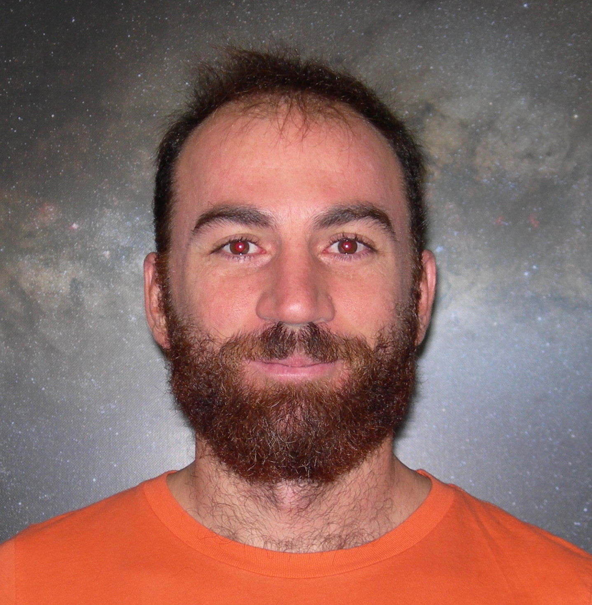
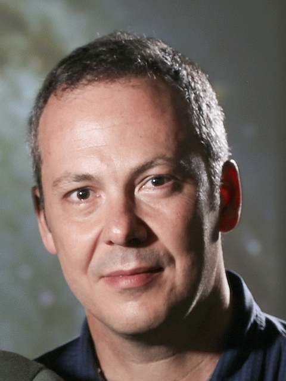

GLADIUS
Gravitational Lensing Analysis for Data Intensive Upcoming Surveys
Scope
Vitae natoque dictum etiam semper magnis enim feugiat convallis convallis egestas rhoncus ridiculus in quis risus amet curabitur tempor orci penatibus. Tellus erat mauris ipsum fermentum etiam vivamus eget. Nunc nibh morbi quis fusce hendrerit lacus ridiculus.

Rhoncus Semper

Magna Nullam

Natoque Vitae

Dolor Penatibus

Orci Convallis
|  |
Georgios VernardosDr. Georgios Vernardos is the PI of the GLADIUS project. |
|  |
Frederic CourbinProfessor at the Laboratory of Astrophysics (LASTRO) at Ecole Polytechnique Federale de Lausanne, Switzerland. |
Publications
- G. Vernardos & Koopmans L.V.E., "The very knotty lenser: Exploring the role of regularization in source and potential reconstructions using Gaussian process regression", Monthly Notices of the Royal Astronomical Society 516, pp. 1347, 2022
- G. Vernardos, "Simulating time-varying strong lenses", Monthly Notices of the Royal Astronomical Society 511, pp. 4417, 2022
- Shajib, A.J., G. Vernardos, Collett T.E., Motta V., Sluse D., Williams L.L.R., Saha P., Birrer S., Spiniello C., Treu T., "Strong Lensing by Galaxies", to be submitted to Space Science Reviews, Topical Collection "Strong Gravitational Lensing", eds. J. Wambsganss et al., 2022
- Best H., Fagin J., G. Vernardos, O'Dowd M., "Resolving the Vicinity of Supermassive Black Holes with Gravitational Microlensing", submitted to Monthly Notices of the Royal Astronomical Society, 2022
- Biggio L., G. Vernardos, Galan A., Peel A. Courbin F., "Modeling lens potentials with continuous neural fields in galaxy-scale strong lenses", Astronomy & Astrophysics in press, 2022
- Galan A., G. Vernardos, Peel A., Biggio L., Courbin F., Starck J.-L., "Using wavelets to capture deviations from smoothness in galaxy-scale strong lenses", Astronomy & Astrophysics in press, 2022
- Biggio L., Domi A., Tosi S., G. Vernardos, Ricci D., Paganin L., Bracco G., "Time-delay estimation in unresolved lensed quasars", Monthly Notices of the Royal Astronomical Society 515, pp. 5665, 2022
- Paic E., G. Vernardos, Sluse D., Millon M., Courbin F., Chan J.H.H., Bonvin V., "Constraining quasar structure using high-frequency microlensing variations and continuum reverberation", Astronomy & Astrophysics 659, id.A21, 2022
- Savary E., Rojas K., Maus M., Clément B., Courbin F., Gavazzi R., Chan J.H.H., Lemon C., G. Vernardos, Cañameras R., Schuldt S., Suyu S.H., Cuillandre J.-C., Fabbro S., Gwyn S., Hudson M.J., Kilbinger M., Scott D., Stone, C., "Strong lensing in UNIONS: Toward a pipeline from discovery to modeling", Astronomy & Astrophysics 666, id.A1, 2022
- Chan J.H.H., Lemon C., Courbin F., Gavazzi R., Clément B., Millon M., Paic E., Rojas K., Savary E., G. Vernardos, Cuillandre J.-C., Fabbro S., Gwyn S., Hudson M.J., Kilbinger M., McConnachie A., "Discovery of strongly lensed quasars in the Ultraviolet Near Infrared Optical Northern Survey (UNIONS)", Astronomy & Astrophysics 659, id.A140, 2022
- Van de Vyvere L., Gomer M.R., Sluse D., Xu D., Birrer S., Galan A., G. Vernardos, "TDCOSMO. VII. Boxyness/discyness in lensing galaxies: Detectability and impact on H0", Astronomy & Astrophysics 659, id.A127, 2022
- Mukherjee S., Koopmans L.V.E., Tortora C., Schaller M., Metcalf R.B., Schaye J., G. Vernardos, "SEAGLE - III: Towards resolving the mismatch in the dark-matter fraction in early-type galaxies between simulations and observations", Monthly Notices of the Royal Astronomical Society 509, pp. 1245, 2022